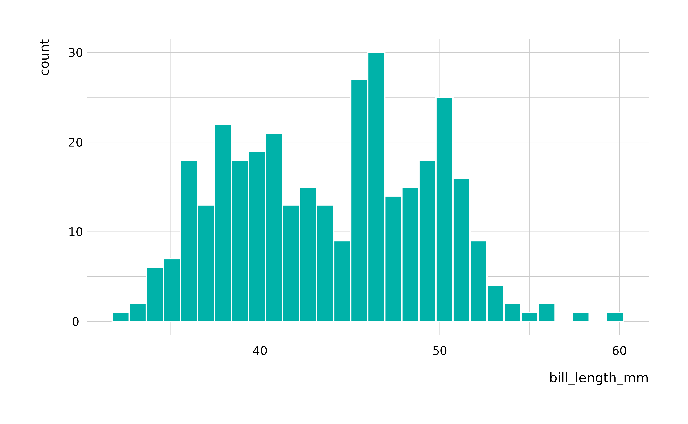
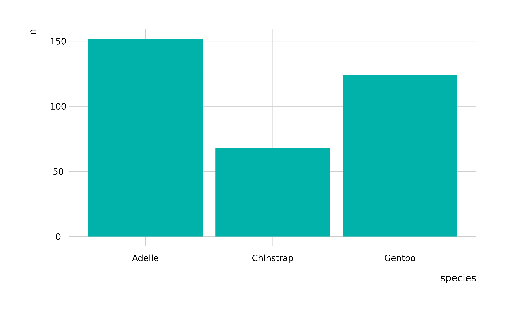
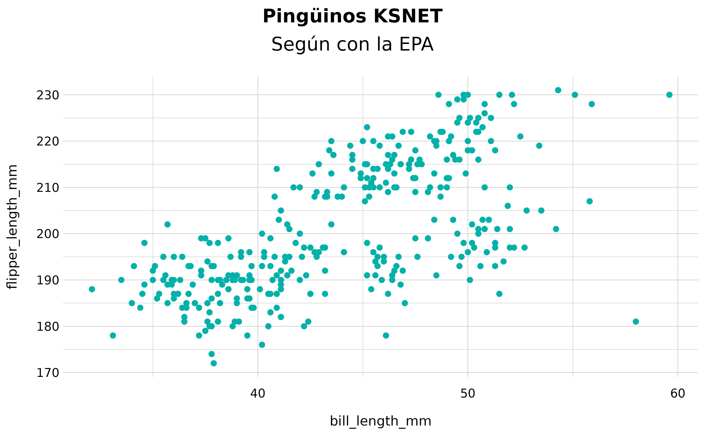
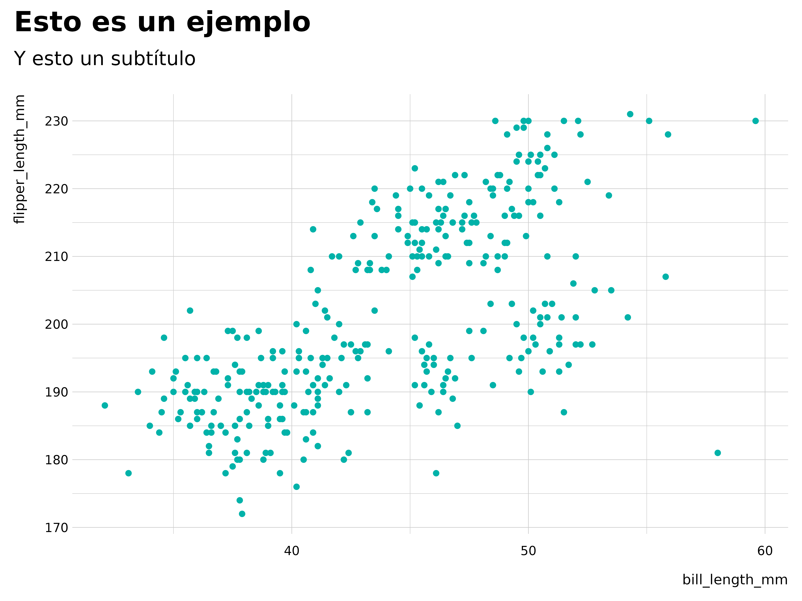

Gráficas
graficas.RmdGráficos
Este es un ejemplo básico que muestra cómo resolver un problema común: hacer una gráfica con datos. Empecemos con un histograma.
## Plotting a histogram of penguin bill length
ksnet_hist(penguins, bill_length_mm)
#> `stat_bin()` using `bins = 30`. Pick better value with `binwidth`.
#> Warning: Removed 2 rows containing non-finite values (`stat_bin()`).
La función se puede usar con la pipe también. Aquí hay una gráfica de barra.
library(dplyr)
#>
#> Attaching package: 'dplyr'
#> The following objects are masked from 'package:stats':
#>
#> filter, lag
#> The following objects are masked from 'package:base':
#>
#> intersect, setdiff, setequal, union
## Simple barplot
penguins %>%
group_by(species) %>%
count() %>%
ksnet_bar(species, n) 
Y finalmente, scatterplots. La función viene preparada para incluir el color estándar de KSNET, así como la plantilla de gráficos. El objeto que genera es un ggplot, así que se pueden añadir títulos y etiquetas fácilmente:
## Simple scatterplot
penguins %>%
ksnet_scatter(bill_length_mm, flipper_length_mm) +
labs(title = "Pingüinos KSNET",
subtitle = "Según con la EPA")
#> Warning: Removed 2 rows containing missing values (`geom_point()`).
Themes
También podemos utilizar themes, o plantillas de gráficas.
ksnet_scatter(penguins, bill_length_mm, flipper_length_mm) +
labs(title = "Esto es un ejemplo",
subtitle = "Y esto un subtítulo") +
theme_ksnet()
#> Warning: Removed 2 rows containing missing values (`geom_point()`).